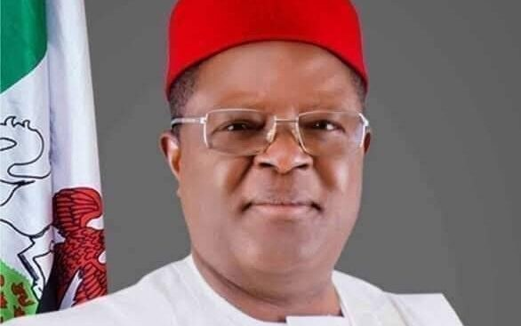

FEC approves ₦631.3 billion for nine road projects nationwide

The Federal Executive Council has approved approximately ₦631.3 billion for nine road projects across Nigeria. Works Minister David Umahi announced the decisions after Wednesday’s council meeting, chaired by President Bola Ahmed Tinubu at the State House in Abuja. He said the projects are intended to improve transport links, connectivity and economic activity through road construction, reconstruction and rehabilitation.
Among the approvals, ₦167 billion was allocated to reconstruct the 95-kilometre Etuke–Okeni–Ankpa–Otopa Road in Kogi State. The council also approved ₦209 billion for the 81.1-kilometre Ado–Ilawe–Ilumaba–Ikole Road in Ekiti, including a bridge, and ₦62 billion for the Tungo–Karamti Road between Adamawa and Taraba, which will include five bridges. Other allocations include ₦20.257 billion for an 18-kilometre road linking Asiago to the Port Harcourt–Enugu Expressway, and ₦30 billion for remedial work on deteriorated sections of the East–West Road.
Umahi said ₦11.33 billion was approved for a road project previously undertaken by the Abia Government. The funding decision followed the end of the project’s arrangement under the Nigerian National Petroleum Company Ltd. tax-credit scheme. The council also approved ₦28.218 billion to rehabilitate a 17-kilometre section of the Sokoto–Illela Road, Route A1.
The minister reported that the first 118-kilometre section of the Abuja–Kaduna–Zaria Road had been completed in 30 months, including 81 kilometres built with reinforced concrete pavement. Work on the second, 164-kilometre section was nearing completion, with 16 kilometres remaining. He said the full 375-kilometre Abuja–Kaduna–Zaria–Kano corridor would have solar-powered streetlights.
Umahi also said ministers from countries along the Lagos–Abidjan coastal highway were due to meet on Friday to discuss financing. The proposed arrangement would involve the African Development Bank lending to participating countries for their sections. The route includes stretches in Nigeria, Togo, Ghana, Côte d’Ivoire and Benin Republic, and is intended to strengthen regional connectivity and trade.
Source: Premium Times